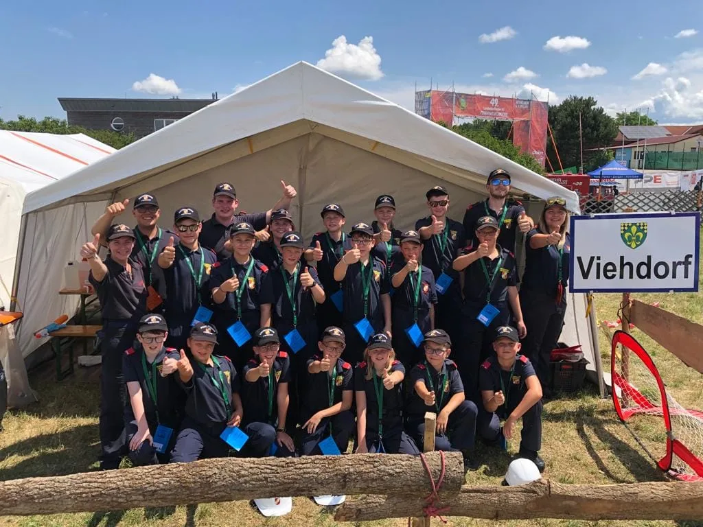
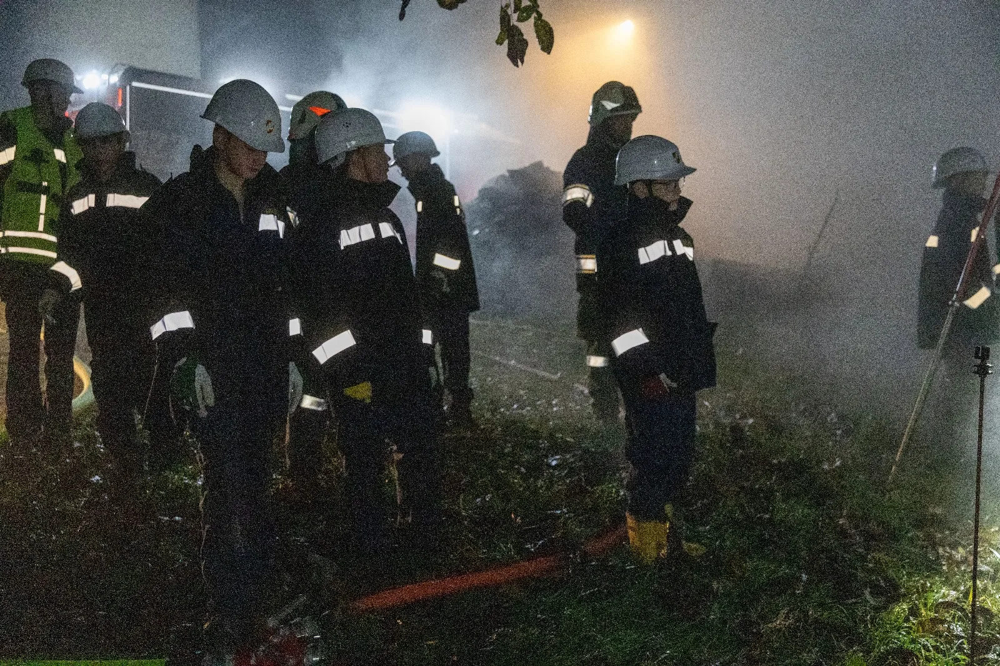

Freunde finden, gemeinsam wachsen, ein Team sein.
Feuerwehrgeräte, Funk & Action – sicher angeleitet.
Zeig, was du kannst – wachse über dich hinaus.

Im Sommer geht’s gemeinsam ins Jugendlager – Abenteuer, Teamwork, Workshops und richtig viel Spaß! Lagerfeuer, Spiele, Outdoor-Erlebnisse und echte Highlights warten auf dich.
Neue Freundschaften garantiert!

Von Schlauch ausrollen bis Funktraining – du lernst bei uns altersgerecht, sicher und spielerisch, wie Feuerwehr funktioniert. Begleitet von motivierten Betreuer:innen.
Für alle, die Action lieben!
„Ich hab gelernt, was Teamwork wirklich heißt.“
– Lisa, 14„Die Übungen mit echtem Gerät sind mega!“
– Max, 13„Ich freue mich jedes Jahr aufs Lager!“
– Sophie, 12Dann komm vorbei oder melde dich bei uns – wir freuen uns auf dich!
Jetzt Kontakt aufnehmen